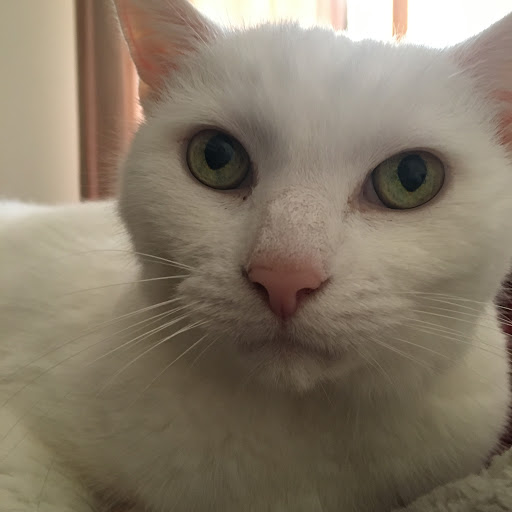

About Me
I am a new student to Algonquin College. I have just graduated from Lester B. Pearson High School. During my time there I got into the media arts styled programs such as photography. This was very enjoyable for me and decided to take the Interactive Media Design program. This is my 1st year in the IMD program.
My Hobbies
- Photography, mostly taking pictures of my pets
- Going out with friends
- Spending time with my family and pets
- Baking
- Writing and reading
- Tarot reading
Favourite Quote
Go Beyond! - Kohei Horikoshi